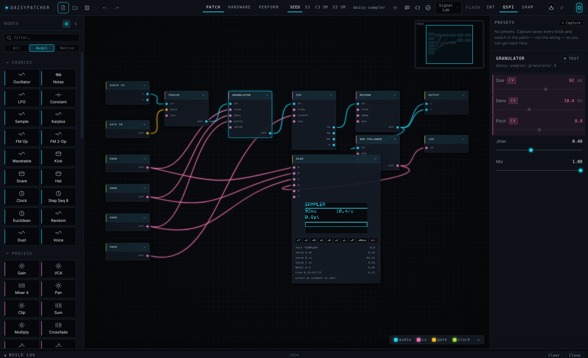
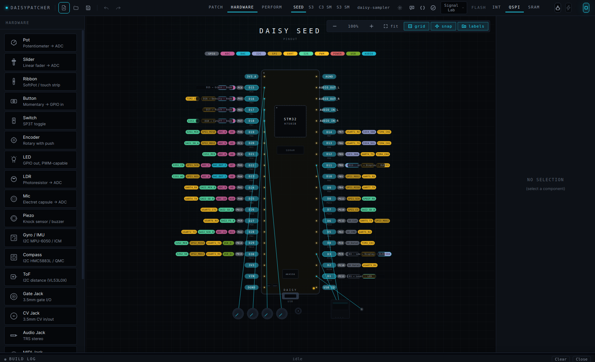
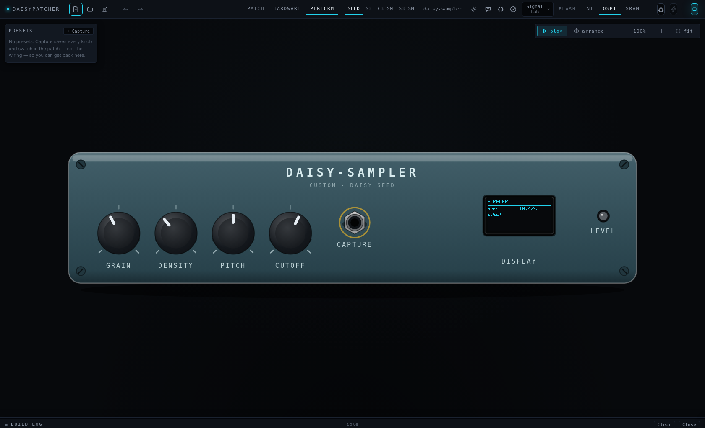

Daisy Seed · ESP32-S3 · ESP32-C3
Patch it.
Hear it. Flash it.
A visual patcher where the patch is the firmware. Drop DSP nodes on a canvas and hear them now; lay the knobs, jacks and OLED out on your board; press Build. What plays at your desk is what the device plays — every node is checked for that.
Linux · Windows · macOS. Free, AGPL-3.0. Work in progress — every rough edge you report gets looked at.
The loop
Five steps, one window, no exporting.
Nothing here needs a second tool. The compilers are the only thing not in the box, and the app installs the libraries and tells you exactly which compiler is missing and how to get it.
Patch
95 node kinds — oscillators to granulators, sequencers to state machines, an OLED with an in-node display designer, a Code node for the rest.
Listen
Every node has a WebAudio twin. Press Space, turn a knob, hear it. Scope, VU and spectrum draw live inside the node.
Wire
Your board, drawn to scale. Drop a pot on a pin; a knob node appears in the patch, already bound. Delete either; both go.
Build
libDaisy/DaisySP for the Seed, PlatformIO for the ESP32s. Live build log, generated code view with per-node provenance.
Flash
DFU or serial, from the same button. Serial monitor for what comes back. Presets and samples ride along in the firmware.



Parity
The preview is the thing you are previewing.
An emulator that sounds different from the device is worse than no emulator: you tune against it and then blame the oscillator. So the two halves are compared, not assumed.
In the app
One worklet per node
Faithful ports of the DaisySP modules — including the parts where a setter quietly rescales its argument. Sixteen divergences were found and fixed this way; several were audible bugs on hardware (a phaser that clipped, a tone knob that did nothing once flashed).
On the device
One emitter per node, per board
The same patch is compiled with the real toolchain, run on the host against a stubbed board, and its waveform is compared with the emulator's — level and shape, every gate input driven, reset and clock both. Structural nodes (subpatch, poly) are flattened before either side sees them, so nesting is bit-identical to the flat patch.
Every example × every board, generated C++ diffed against a checked-in copy.
A kind that claims a board must have a real emitter there; every declared output produced at block scope; boards agree.
Does the feature work: voices expand, presets reach the firmware, samples land in flash, save→load is a fixed point, the assistant refuses bad edits.
Per-node make / pio run for all four boards.
The one that listens.
Boards
One graph, four boards.
The palette greys out what the selected board cannot run, and says why. Switching board keeps your components and flags any pin that does not exist on the new one.
| Board | Audio | Native kinds | Notes |
|---|---|---|---|
| Daisy Seed | onboard codec | 94 / 95 | The reference target. First run clones and builds libDaisy + DaisySP. |
| ESP32-S3 DevKitC | I²S DAC — PCM5102A, MAX98357A | 91 / 95 | granulator runs with a shorter buffer without PSRAM; expression and the I²S pass-through kinds are stubs. |
| ESP32-S3 SuperMini | I²S DAC | 91 / 95 | The ESP32-S3-Zero layout: 2 × 9 header pins plus castellated/back pads. As DevKitC otherwise. |
| ESP32-C3 SuperMini | I²S DAC | 88 / 95 | As above, minus USB-MIDI: RISC-V has no TinyUSB device stack. |
Download
Beta builds, straight off CI.
Unsigned everywhere for now — the OS will ask once. Linux is the most travelled. Compilers are not bundled; the app tells you what it needs, per board, and where to get it.
Linux
AppImage, x64 and arm64. chmod +x, run.
Seed flashing needs a udev rule — it is in the guide and in the flash log when it fails.
AppImageWindows
NSIS installer or portable exe, x64.
SmartScreen: More info → Run anyway. The Daisy Toolchain installer brings gcc, make and dfu-util.
InstallermacOS
dmg, Intel and Apple Silicon.
Unsigned: right-click → Open the first time. Auto-update is off on macOS until builds are signed.
DMGOr run from source: git clone https://github.com/willbearfruits/daisypatcher && cd daisypatcher && npm install && npm run dev — Node 22+.
Your data
Nothing phones home.
No telemetry. The app talks to the network for three things only: the one-time SDK clone from GitHub, the update check against GitHub Releases (Linux and Windows), and — if you use it — the assistant.
The assistant is opt-in and off until you open it. When you send it a request, the current patch (node kinds, parameters, connections — not your samples, not your files) and your message go to the provider you picked. Ollama, the default, is local: nothing leaves your machine. Anthropic or OpenAI means their API over HTTPS; your key lives in the app's config folder, readable only by your user, and never enters the window.
Patches are files you own. .dpatch is plain JSON.